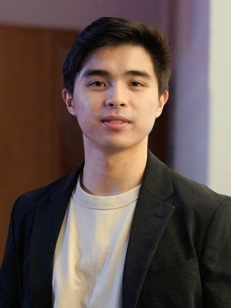
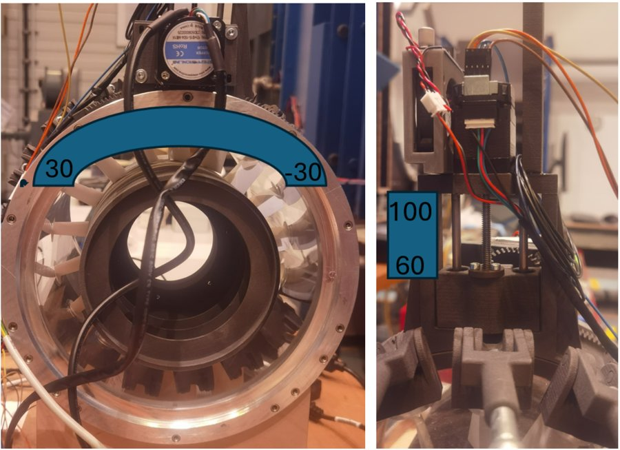
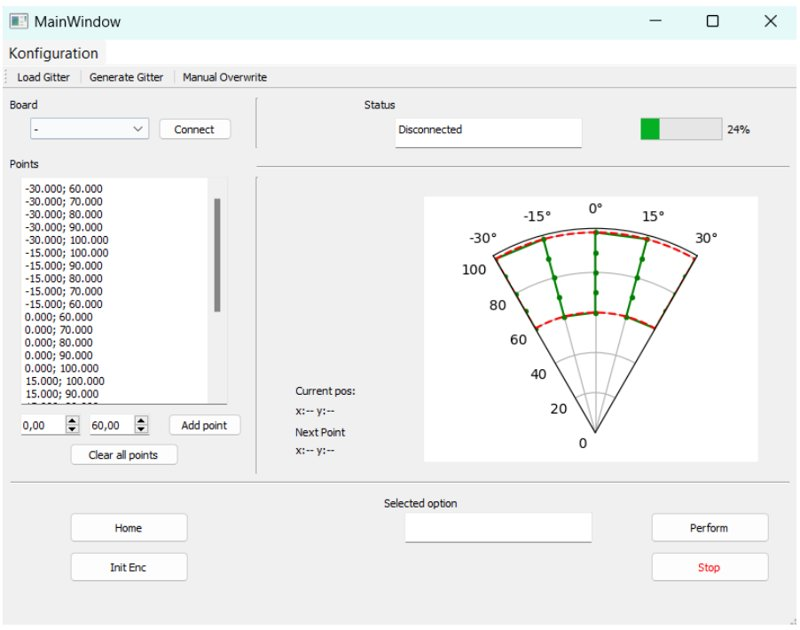
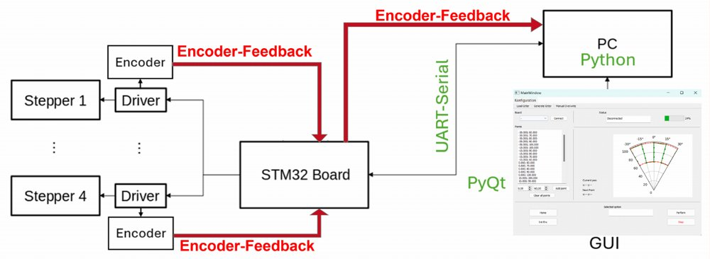

I write the software that makes lab hardware and robots measure and move: photonic chip test stations, stepper-motor rigs and robot arms.
M.Sc. Computer Engineering at TU Berlin (Robotics and Biology Lab). Research assistant in photonic test automation at Fraunhofer HHI since 2023. Based in Berlin; English, German (C1) and Indonesian.

My path runs one layer up at a time while keeping the layer below in my hands. I built a motor from 3D-printed parts in my bachelor thesis, wrote closed-loop stepper-motor firmware and a Python operator program for a wind-tunnel probe, automated a photonic chip test station at Fraunhofer HHI, and now work on state estimation and adaptive robot behaviour in my master's thesis.
I like checking results from more than one direction. In my bachelor thesis, finite-element simulation, an analytic model and load tests agreed on the motor torque; in my master's thesis I swept 56 parameters before trusting any conclusion.
Fiber alignment, laser sweeps and power readings chained into one Python measurement sequence.
Read more →Close ↑Measuring a photonic chip means coupling light into waveguides a few micrometres wide, again and again, for every input and output. I integrated Thorlabs stepper stages (coarse positioning) and NanoTrak controllers (fine alignment) into SweepMe! sequences, and adapted drivers for an EXFO T100 tunable laser with CTP10 and an Agilent laser for wavelength sweeps and power readings.
56 parameters × 5 levels × 4 scenarios: which parameters actually decide whether a robot succeeds?
Read more →Close ↑Robotics and Biology Laboratory, TU Berlin (advisors Prof. Dr. Oliver Brock, Vito Mengers), planned submission January 2027. AICON produces behaviour by linking EKF-based state estimators through differentiable interconnections, with gradients computed in PyTorch.
RGB-D perception, YOLO detection and KOMO trajectory optimisation, moved from simulation to a real Franka Panda.
Read more →Close ↑AI and Robotics Lab Course, TU Berlin, winter 2025/26. In a team of three, we built a real-time system in which a Franka Panda catches a thrown ball with a cup: Intel RealSense RGB-D camera, YOLO detection with custom-trained models, ArUco calibration into robot world coordinates, and joint-space trajectory optimisation with KOMO.
STM32 firmware and a Python/Qt operator program that move a probe with 4 encoder-equipped stepper motors.
Read more →Close ↑TU Berlin, Chair of Aircraft Propulsion, 2025, with Matthias Klose. The system positions a Prandtl probe to measure the flow field in front of a compressor. I wrote the STM32 firmware as a UART-commanded state machine (rest, edit, run) driving 4 NEMA 17 motors with 1,000 PPR encoders; we built the Python/Qt GUI that generates measurement grids and closes the loop on encoder feedback with acknowledged commands.



Extended Kalman Filter fusing odometry and LIDAR landmarks, plus sliding-window stereo pose estimation.
Read more →Close ↑Image reconstruction, panoramic mosaicing and optical flow from event-camera data.
Read more →Close ↑A BLDC motor built from printed parts and 384 magnets, reaching 3,750 RPM.
Read more →Close ↑Franka Panda object placement with OMPL RRT-Connect in C++ and custom collision-monitoring services.
Read more →Close ↑A ROS 2 framework in Robosuite/MuJoCo that places objects inside a cabinet using inverse kinematics and robot-state feedback, with OMPL's RRT-Connect for collision-free planning and real-time collision monitoring through custom ROS 2 services.
Python, PyVISA, SweepMe!, EXFO T100 tunable laser (CTP10), Agilent laser, Thorlabs stages and NanoTrak, oscilloscope, function generator
ROS 2, ROS 1, MoveIt 2, OMPL, MuJoCo, Gazebo, Extended Kalman Filter, particle filter, batch and sliding-window optimisation, YOLO, OpenCV, RealSense
STM32, Raspberry Pi Pico, UART, PCB design (EAGLE), LTspice, FEMM, CAD and 3D printing; photonic layout with Nazca and KLayout
Python, C/C++, MATLAB, PyTorch, NumPy, SciPy, Qt for Python, Linux, Git, Docker, SLURM
Available full-time from March 2027 for jobs and PhD positions in test automation, robotics and embedded systems.